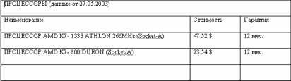

DRKB Explorer
Как создать таблицу в Word'е?
01.01.2010
Темой этой части статьи будет создание таблиц в редакторе Word из приложений, написанных на Delphi. В прошлый раз мы рассмотрели создание простых документов, которые не содержат таблиц переменной длины, но большинство отчетов так или иначе содержит табличное представление информации. Уверен, что хоть один отчет в вашей программе содержит хоть одну таблицу. Поэтому информации двух предыдущих частей статьи было бы недостаточно для создания отчета, содержащего табличное представление информации.
Как создать таблицу в Word'е? Так же просто, как это делается в обычном объектно-ориентированном языке. В объекте Document мы имеем коллекцию Tables, с помощью методов и объектов которой можем создать таблицу и получить доступ к ее свойствам, ячейкам и тексту в ячейках. Если в нашем отчете несколько таблиц, то к любой из них мы имеем доступ с помощью коллекции Tables и индекса таблицы. Чтобы более ясно представить процесс создания таблицы, используя объектные модели MS Office, создадим документ, аналог которого после простой доработки можно будет использовать в своих программах для вывода информации. Одним из самых распространенных отчетов, содержащих таблицу, является документ типа "Прайс-лист". Его мы и будем создавать. Попробуем создать его без шаблона, т.е. с чистого листа. Определимся, каким набором функций нужно владеть для создания этого документа. Во-первых, нам нужна будет функция создания таблицы, затем потребуется задать(изменить) размеры этой таблицы, вписать данные в ячейки, объединить ячейки. Возможно, потребуется еще несколько вспомогательных функций. Творчески используя материал статьи, вы сможете сами определить и создать для себя еще несколько функций для работы с таблицами. Определим функцию создания таблицы CreateTable. Так как количество таблиц в документе может быть больше одной, то для идентификации каждой таблицы используем ее номер. Для создания применим метод ADD коллекции Tables. Метод ADD имеет аргументы: область, где создается таблица, количество строк и количество столбцов. Наша функция будет создавать таблицу там, где расположен курсор, и иметь еще один аргумент: числовую переменную, через которую будет возвращаться порядковое значение(индекс) таблицы в документе. Функция выглядит следующим образом:Function CreateTable(NumRows, NumColumns:integer; var index:integer):boolean; var sel_:variant; begin CreateTable:=true; try sel_:=W.selection; W.ActiveDocument.Tables.Add (Range:=sel_.Range,NumRows: =NumRows, NumColumns:=NumColumns); index:=W.ActiveDocument. Tables.Count; except CreateTable:=false; end; End;Первый оператор определяет область выделения или положения курсора, второй оператор создает таблицу и третий возвращает количество таблиц в документе или порядковый номер вновь созданной таблицы, который будет использоваться другими функциями для доступа к этой таблице. Наша функция создаст таблицу произвольного размера, но для корректного представления данных необходимо задать определенные размеры строк и столбцов. Чтобы задать размер таблицы или строки(столбца), нужно получить доступ к таким свойствам таблицы, как коллекции Columns и Rows (список столбцов и строк), через которые сможем получить доступ к конкретной строке или(и) столбцу, к ячейкам и к параметрам ячейки(строки, столбца). Для этого используем объект ActiveDocument.Tables.Item(table), где table - номер таблицы в документе. Создадим функцию, которая будет задавать ширину и высоту всех ячеек таблицы.
Function SetSizeTable(Table:integer; RowsHeight, ColumnsWidth:real):boolean; begin SetSizeTable:=true; try W.ActiveDocument.Tables.Item (Table).Columns.Width:=ColumnsWidth; W.ActiveDocument.Tables.Item(Table). Rows.Height:=RowsHeight; except SetSizeTable:=false; end; End;Аналогично мы можем задавать высоту любой строки или(и) ширину любого столбца на выбор. Для доступа к размерам ячейки используем также коллекции Rows, Columns объекта Table. Чтобы воспользоваться этими возможностями из нашего приложения, создадим следующие функции.
Function SetHeightRowTable(Table,Row:integer; RowHeight:real):boolean; begin SetHeightRowTable:=true; try W.ActiveDocument.Tables.Item(Table).Rows.item(Row).Height:=RowHeight; except SetHeightRowTable:=false; end; End; Function SetWidthColumnTable(Table,Column: integer; ColumnWidth:real):boolean; begin SetWidthColumnTable:=true; try W.ActiveDocument.Tables.Item(Table).Columns. Item(Column).Width:=ColumnWidth; except SetWidthColumnTable:=false; end; End;Возможно, нам придется не только задавать размеры таблицы, но и определять(считывать) размеры ячеек таблицы. Для этого используем те же коллекции, объекты и свойства таблицы, что и в функции SetSizeTable, но немного изменим внутренние операторы таким образом, что в возвращаемые переменные RowsHeight и ColumnsWidth будут записываться значения размеров строк и столбцов таблицы.
Function GetSizeTable(Table:integer;var RowsHeight, ColumnsWidth: real):boolean; begin GetSizeTable:=true; try ColumnsWidth:=W.ActiveDocument. Tables.Item(Table).Columns.Width; RowsHeight:=W.ActiveDocument. Tables.Item(Table).Rows.Height; except GetSizeTable:=false; end; End;Также можно считать и размеры строки или столбца на выбор, для этого достаточно использовать коллекции Rows, Columns объекта Table (Tables.Item(Table)). Следующим этапом формирования табличного документа определим запись текстовой информации в выбранную ячейку таблицы. Одним из способов такой записи является доступ к полю Text ячейки, но и в этом случае текст записывается не напрямую, а в объект Range ячейки таблицы. Функция SetTextToTable выполняет такую запись.
Function SetTextToTable(Table:integer;Row, Column:integer; text:string):boolean; begin SetTextToTable:=true; try W.ActiveDocument.Tables.Item(Table).Columns.Item(Column). Cells.Item(Row).Range.Text:=text; except SetTextToTable:=false; end; End;И последнее действие, которое необходимо произвести над таблицей для создания простого табличного документа, это объединение ячеек. Для этого воспользуемся методом Merge объекта Cell (ячейка). Первый оператор функции объединения ячеек возвращает указатель на объект - конечную ячейку (Cel). Второй оператор объединяет начальную ячейку Row1,Column1 с конечной ячейкой, табличные координаты которой уже заданы и равны Row2,Column2.
Function SetMergeCellsTable(Table:integer;Row1, Column1,Row2,Column2:integer):boolean; var Cel:variant; begin SetMergeCellsTable:=true; try Cel:=W.ActiveDocument.Tables.I tem(Table).Cell(Row2,Column2); W.ActiveDocument.Tables.Item(Table). Cell(Row1,Column1).Merge(Cel); except SetMergeCellsTable:=false; end; End;Переходим к заключительной стадии - созданию документа. Для этого все определенные в этой части статьи функции объединим с ранее созданными и перенесем во вновь созданную библиотеку процедур и функций. Например, это будет файл MyWord.pas, в разделе interface которого будут описаны заголовки всех наших функций, а в разделе implementation - сами функции (в дальнейшем будем пользоваться этой библиотекой). Не забудьте после implementation вставить строки uses ComObj; var W:variant;. Создадим новый проект, в программном модуле которого сделаем ссылку на нашу библиотеку uses MyWord;. На форме разместим кнопку и в процедуру обработки нажатия ее впишем следующий программный код.
procedure TForm1.Button1Click(Sender: TObject);
var tablica_:integer;
begin
if CreateWord then begin
VisibleWord(true);
If AddDoc then begin
// cсоздаем таблицу
If CreateTable(5,3,tablica_) then begin
Messagebox(0,pchar('Таблица создана='+inttostr(tablica_)),'',0);
// изменяем размеры таблицы
SetSizeTable(tablica_,25,37);
SetWidthColumnTable(tablica_,1,300);
SetWidthColumnTable(tablica_,2,80);
SetWidthColumnTable(tablica_,3,80);
Messagebox(0,'Размер таблицы изменен','',0);
// записывает информацию в ячейки таблицы
SetTextToTable(tablica_,1,1,
'ПРОЦЕССОРЫ (данные от 27.05.2003) ');
SetTextToTable(tablica_,2,1,'Наименование');
SetTextToTable(tablica_,2,2,'Стоимость');
SetTextToTable(tablica_,2,3,'Гарантия');
SetTextToTable(tablica_,3,1,
'ПРОЦЕССОР AMD K7- 1333 ATHLON 266MHz (Socket-A)');
SetTextToTable(tablica_,3,2,'47.52 $');
SetTextToTable(tablica_,3,3,'12 мес.');
SetTextToTable(tablica_,4,1,
'ПРОЦЕССОР AMD K7- 800 DURON (Socket-A)');
SetTextToTable(tablica_,4,2,'23.54 $');
SetTextToTable(tablica_,4,3,'12 мес.');
// объединяем необходимые ячейки таблицы
SetMergeCellsTable(tablica_,1,1,1,3);
end;
SaveDocAs('c:\Прайс лист');
Messagebox(0,'Текст сохранен','',0);
CloseDoc;
end;
Messagebox(0,' Текст закрыт','',0);
CloseWord;
end;
end;
В результате выполнения приведенной выше процедуры получим результат, который выглядит, как показано на рисунке.

Полный исходный текст смотрите по адресу www.kornjakov.ru/st1_3.zip.
Мы сформировали достаточно простую таблицу, но редактор Word позволяет создавать очень сложные документы (см. как пример бланки налоговых деклараций). Практика показывает, что для таких документов лучше использовать шаблоны, которые можно заполнять информацией из программы. Причем такие шаблоны не обязательно создавать самому, они есть в любых правовых справочных системах. В следующей части статьи будет рассмотрен пример создания сложного документа, который сочетает заполнение шаблона и заполнение таблицы переменной длины, для этого понадобится ряд дополнительных функций, которыми будет дополнена наша библиотека.
По всем вопросам, касающимся материала этой статьи, вы можете обратиться к автору по адресу www.kornjakov.ru или _kvn@mail.ru.
Василий КОРНЯКОВ
Литература: Н. Елманова, С. Трепалин, А.Тенцер "Delphi 6 и технология COM" "Питер" 2002.